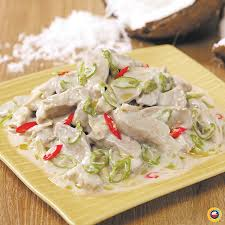

BIKOL EXPRESS
Description
Bicol Express, in all of its well-balanced spice and sweetness, also makes for an irresistible cold day meal. With a creamy, delicious stew containing ginger, and a generous amount of essential seasonings in salt and pepper, the flavors come together for the most comforting spoonful of meat and soup.
Time to Make:
Prep: 5minutes minutes
Cook: 55minutes minutes
Total: 1hour
Ingredients
- 2 lbs. pork belly sliced into strips
- 2 cups coconut milk
- 2 cups coconut cream
- 1/2 cup shrimp paste bagoong alamang
- 4 cloves garlic crushed
- 6 pieces Thai chili pepper chopped
- 1 thumb ginger minced
- 1 piece onion chopped
- 1 pieces Serrano pepper sliced
- 1 cup water optional
Instructions:
- Combine ginger, garlic, onion, Thai chili pepper, pork, and coconut milk in a pan. Mix well. Cover the pan and turn the heat to on. Let the mixture boil.
- Remove the cover. Stir. Add half of the bagoong and pour around 1 cup of coconut cream and a cup of water. Stir and adjust the heat to low. Cook until the sauce reduces to a quarter (around 50 minutes).
- Add the remaining coconut cream and bagoong alamang (as needed). Also add the Serrano peppers. Continue cooking in low heat until the sauce thickens (around Transfer to a serving plate and serve with warm rice.